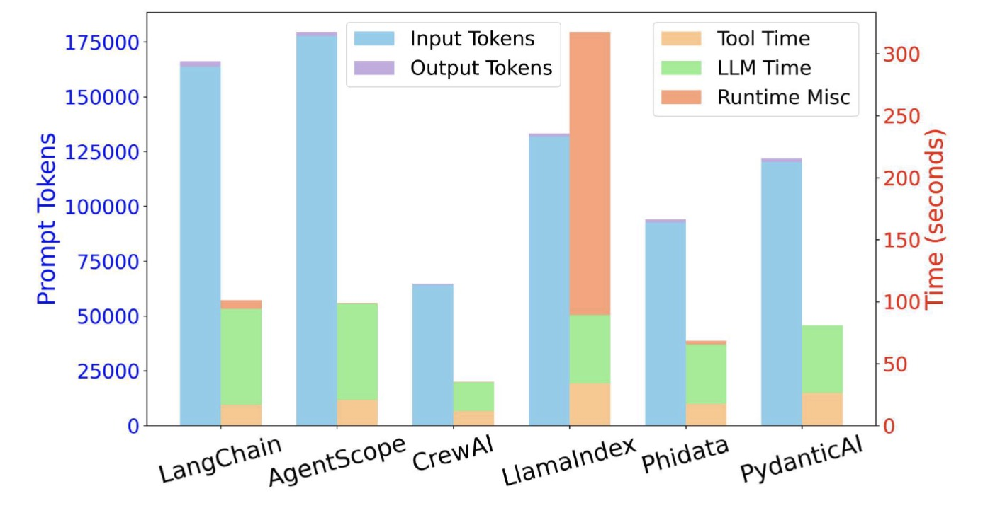
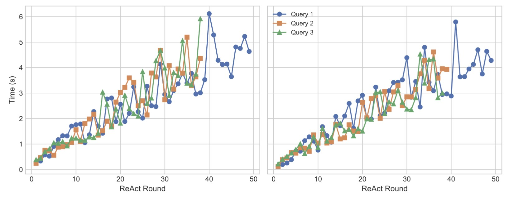
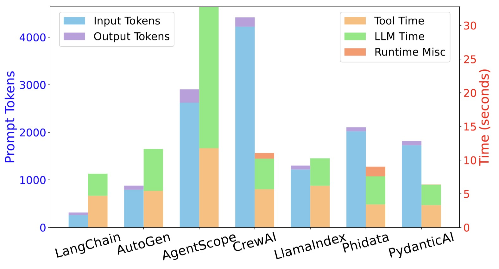
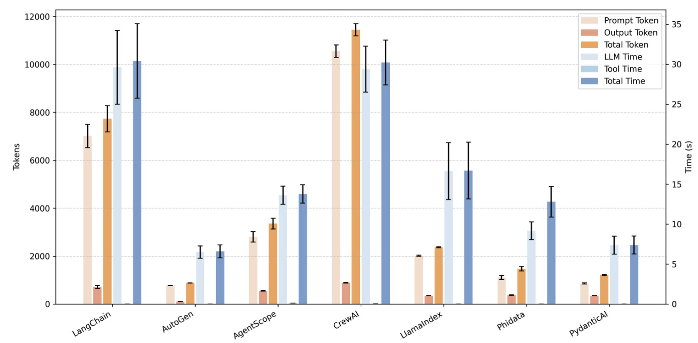
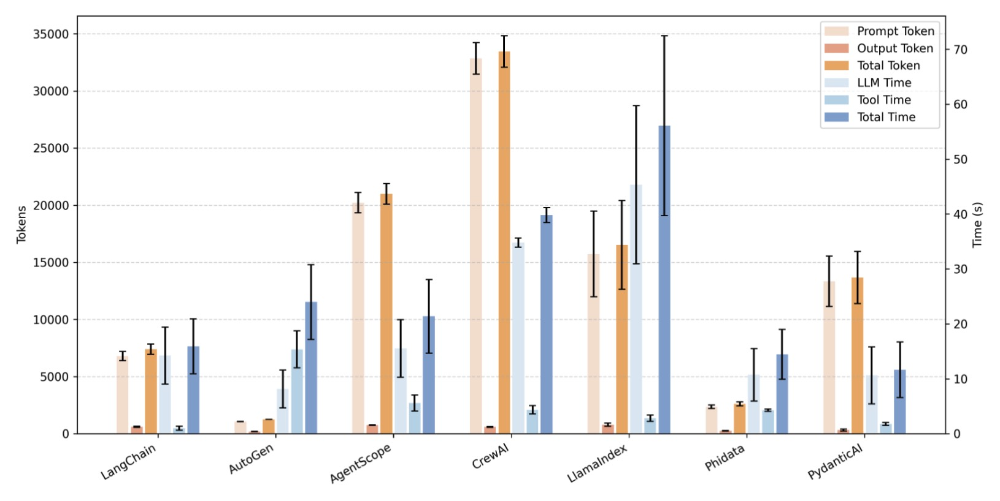
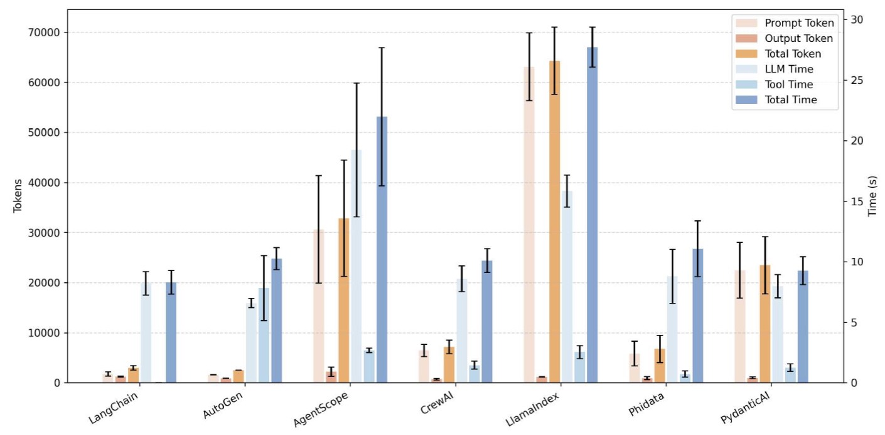
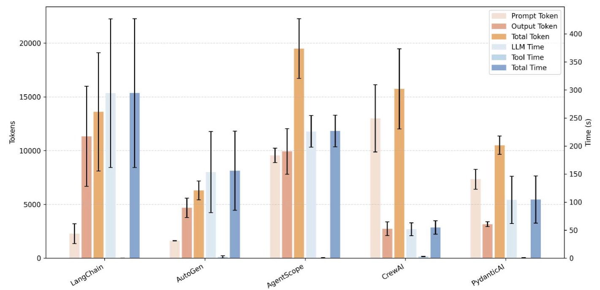

Insights
This page documents the insights gathered during the experimentation process, with each insight accompanied by explanations of the Key Observations and the Underlying Mechanisms. The underlying mechanisms are categorized as follows:
Common Mechanisms represent fundamental patterns or bottlenecks that are consistent across all agent frameworks.
Variational Mechanisms arise from differing design choices in implementing core agent functionalities, which lead to significant performance variations between frameworks.
Unique Mechanisms are idiosyncratic to a specific framework, often stemming from a particular architectural decision or optimization that is not found elsewhere, thereby defining its unique performance profile.
Unique Insights among Frameworks
Accuracy-Efficiency Tradeoff
| Memory Window Size | 1 | 25 | 35 | Max |
|---|---|---|---|---|
| Accuracy | 0.236 | 0.248 | 0.242 | 0.218 |
| Average Token Comsumption per Query | 79767.8 | 85032.61 | 87013.7 | 95426.57 |
Key Observations
To investigate whether the built-in historical memory of the CrewAI framework affects accuracy, we compared four settings on the GAIA dataset: (i) using a memory window size of 1, (ii) using a memory window size of 25, (iii) using a memory window size of 35, and (iv) using the maximum memory window size. Here, the memory window size indicates the interval of queries after which the Agent is re-initialized (e.g., every 1, 25, or 35 queries), while the maximum setting corresponds to initialization only at the very beginning of the task. Results are shown in Table 6.
[Unique]Underlying Mechanism: Accuracy-Efficiency Tradeoff
We observed that as the memory window size increases, token consumption rises steadily, while accuracy first improves and then declines. This indicates that incorporating an appropriate amount of memory can enhance task performance; however, excessive memory not only leads to escalating token costs and reduced efficiency, but also fails to yield higher accuracy. In practice, the memory window size should therefore be tuned to achieve a reasonable balance between accuracy and efficiency.
Communication Size
Get a better experience on larger screens
| LangChain | AutoGen | AgentScope | CrewAI | LlamaIndex | Phidata | PydanticAI | ||
|---|---|---|---|---|---|---|---|---|
| From Global Agent | Agent1 | 165.07/0 | 209.08/44.01 | 284.078/0 | 514.962/0 | 1180.078/898 | 354.508/0 | 96.022/0 |
| Agent2 | 165.07/0 | 209.08/44.01 | 284.078/0 | 483.740/0 | 1180.078/898 | 354.508/0 | 96.022/0 | |
| Agent3 | 165.07/0 | 209.08/44.01 | 284.078/0 | 619.516/0 | 1180.078/898 | 354.508/0 | 96.022/0 | |
| To Aggregation Agent | Agent1 | 1983.02/3 | 2066.04/52.4 | 1659.318/0 | 2497.929/0 | 1180.078/898 | 354.508/0 | 96.022/0 |
| Agent2 | 2011.83/3 | 2071.24/57.38 | 1511.311/0 | 1754.701/0 | 1180.078/898 | 354.508/0 | 96.022/0 | |
| Agent3 | 2072.98/3 | 2156.04/66.81 | 1889.247/0 | 2151.097/0 | 1180.078/898 | 354.508/0 | 96.022/0 |
Key Observations
In multi-agent frameworks, communication between agents is often overlooked as a source of inefficiency. However, our analysis reveals large discrepancies in communication size across frameworks, as shown in Table 2. These differences arise not only from framework-specific message formats but also from architectural design choices.
[Unique]Underlying Mechanism: Inefficient Communication Architecture
Frameworks such as CrewAI, which adopt a centralized communication pattern, exhibit significantly higher communication costs. In these designs, a central agent coordinates multiple sub-agents by sequentially delegating subtasks and collecting responses. For example, in CrewAI's MoA implementation, the center agent queries three sub-agents in sequence and aggregates their outputs. Each LLM invocation by the center agent accumulates prior messages in memory, causing the prompt size and the communication payload to grow linearly with the number of sub-agents.
[Unique]Underlying Mechanism: Package Design
In addition to the core message, Phidata returns a duplicated content field that mirrors the final message. This, combined with additional metadata fields, results in large communication sizes.
Potential Optimizations
Future agent frameworks should consider decentralized communication protocols and agent sampling to reduce unnecessary transfer overhead.
Execution Time and Token consumption
Key Observations
In the results of ReAct workflow, it can be observed that even when using the same ReAct workflow, AgentScope exhibits a significant discrepancy in token usage between the GAIA and HumanEval datasets, with exceptionally high token consumption on GAIA. This is primarily because AgentScope includes the entire memory of the agent in the prompt during every LLM invocation. As the number of reasoning steps increases, the prompt length grows rapidly. While this issue is less apparent in the relatively simple HumanEval dataset, it becomes prominent in the more complex GAIA tasks.
The high token usage observed in CrewAI's ReAct workflow can be attributed to the same reason. In fact, this issue is even more pronounced in CrewAI than in AgentScope, with significantly elevated token consumption observed across both the GAIA and HumanEval datasets.
[Unique] Underlying Mechanism: Overly Detailed Observations
In contrast, the majority of token consumption in LlamaIndex and Pydantic arises from the observation segments returned to the LLM after tool invocations. In the GAIA dataset, where tasks are complex and involve frequent tool usage, this results in substantial prompt token overhead.

Figure 6. ScienceWorld
Key Observations
As illustrated in the Figure 6, a substantial portion of LlamaIndex's total execution time is attributed to runtime misc. This overhead originates directly from the particular internal implementation of LlamaIndex’s ReAct workflow, which integrates the LLM output with tool results at the end of every reasoning turn. While this implementation detail imposes negligible cost when the number of turns is limited, the burden becomes increasingly pronounced as the contextual length expands across turns.
[Unique] Underlying Mechanism: Context Growth–Induced Increases in Aggregation and Parsing Time

Figure 7. Visualization of the tool-observation aggregation time per ReAct round in the LlamaIndex framework (left), and the output-parsing time per ReAct round in the LlamaIndex framework (right).
In the LlamaIndex framework, we select a subset of queries and visualize how their tool-observation aggregation time and output-parsing time evolve as the number of ReAct iterations increases, as illustrated in Figure 7. Evidently, the context expansion induced by additional ReAct rounds introduces substantial miscellaneous latency into the overall system execution.
Common Insights among Frameworks
Execution Time and Token Consumption

Figure 3. Token consumption and execution time per query of different frameworks.

Figure 5. OK-VQA
Key Observations
Figure 3 presents the breakdown of agent execution time across four benchmark scenarios. The results on OK-VQA are available at shown in Figure 5;. Across all settings, LLM inference consistently dominates runtime. Even in the GAIA scenario, which is explicitly designed to be tool-intensive and involves frequent calls to external APIs, LLM inference accounts for more than 85\% of the total execution time in most frameworks. This highlights that LLM inference, due to its computational demands and frequent invocation, remains the primary bottleneck in agent execution, regardless of the complexity or type of task. Moreover, we observe that the cost of LLM inference is further exacerbated by large variations in token efficiency across frameworks. There is a strong positive correlation between LLM inference time and token consumption.
[Unique] Underlying Mechanism: Appending Full History to Prompts
We observe that CrewAI and AgentScope elevate token usage arises from their design choice. In their implementation, the LLM stores all intermediate inputs and outputs in memory and appends this memory to each new prompt. As a result, the prompt length grows with every step of reasoning, causing a high token consumption.
[Unique] Underlying Mechanism: Using Verbose Prompts
In the ReAct workflow, LlamaIndex consumes a significant amount of prompts, primarily due to the observation portion returned to the LLM after tool invocation. Additionally, for queries that fail to execute successfully, the number of reasoning and action iterations increases, leading to a corresponding growth in the observation-related prompts.
Potential Optimizations
While LLM inference remains the dominant bottleneck in most of our benchmarks, more complex, tool-heavy scenarios, such as document analysis or multimodal agent tasks, may shift the performance bottleneck toward tool execution. Frameworks aiming to support such use cases must pay greater attention to optimizing tool orchestration and external API integration.
In-depth Analysis
● AgentScope and CrewAI frequently use the Web tool for precise results, leading to higher token usage due to long text outputs. In our tests, they called the Web tool 494 and 608 times, far more than other frameworks (max 102).
● AgentScope often writes and executes code to solve problems, which requires returning large code blocks, increasing token usage. It used the code execution tool 122 times, while others used it no more than 21 times.
AgentScope stands out by retaining memory across queries, continuously appending prior interactions to the prompt. Unlike earlier tests that re-instantiated the Agent to avoid memory buildup, running 9 GAIA queries without resets confirmed clear memory accumulation.
Get a better experience on larger screens
| Query | 1 | 2 | 3 | 4 | 5 | 6 | 7 | 8 | 9 |
|---|---|---|---|---|---|---|---|---|---|
| without memory accumulation | 958.2 | 814.5 | 865.0 | 1201.6 | 977.8 | 1007.0 | 738.0 | 3292.4 | 941.4 |
| with memory accumulation | 1432.8 | 3002.5 | 3700.5 | 4380.0 | 5392.2 | 6804.5 | 7322.0 | 7958.33 | 8717.5 |
In the MoA study, we observed that some frameworks invoke LLMs sequentially. We explored the impact of changing the order of LLM calls on token consumption. there are some results:
Table: GAIA Detailed Results
| Sequence | GLM | Qwen | DS | GPT | ||||||||
|---|---|---|---|---|---|---|---|---|---|---|---|---|
| Prompt | Completion | Total | Prompt | Completion | Total | Prompt | Completion | Total | Prompt | Completion | Total | |
| GLM->Qwen->DS | 1296.82 | 734.62 | 2031.44 | 241.86 | 383.12 | 624.98 | 447.0 | 968.5 | 1415.5 | 36750.26 | 1119.44 | 37869.7 |
| DS->Qwen->GLM | 2953.52 | 1909.5 | 4863.02 | 279.96 | 557.84 | 837.8 | 279.36 | 568.14 | 847.5 | 36732.26 | 1129.24 | 37861.5 |
Note: GLM, Qwen, and DS refer to GLM-Z1-Rumination-32B-0414, Qwen2.5-7B-Instruct, and DeepSeek-V3, respectively.
| LangChain | AutoGen | AgentScope | CrewAI | LlamaIndex | Phidata | PydanticAI | |
|---|---|---|---|---|---|---|---|
| GAIA | -0.12 | -0.0123 | -0.0884 | -0.2026 | -0.0371 | -0.0551 | 0.2408 |
| OK-VQA | - | -0.1215 | -0.2054 | -0.1796 | -0.044 | -0.1249 | -0.1447 |
| ScienceWorld | -0.273 | - | -0.3113 | -0.0237 | -0.0919 | -0.1485 | -0.1485 |
| LangChain | AutoGen | AgentScope | CrewAI | LlamaIndex | Phidata | PydanticAI | |
|---|---|---|---|---|---|---|---|
| GAIA | -0.1008 | -0.1211 | -0.1508 | -0.2456 | -0.0053 | -0.0789 | 0.1868 |
| OK-VQA | - | - | -0.2093 | -0.2237 | -0.0406 | -0.0317 | -0.0515 |
| ScienceWorld | -0.264 | - | -0.3115 | -0.0034 | -0.3141 | -0.0564 | -0.1566 |
We also compute the Pearson correlation coefficients between token counts and accuracy. For GAIA and VQA, each successful query is assigned a value of 1 and each failed query a value of 0, whereas ScienceWorld uses the query’s numerical score. The results are presented in Table 30. We observe that nearly all Pearson coefficients are negative, which is likely attributable to the fact that queries requiring a larger number of tokens tend to be inherently more challenging and therefore more prone to failure. We observe that the correlation between token consumption and accuracy is generally weak across all framework-dataset pairs (all |r| < 0.35). Moreover, most coefficients are negative, indicating that within a given framework successful queries tend to use slightly fewer tokens than failed ones. This suggests that simply "trying harder" with more steps and longer prompts does not systematically improve correctness; on the contrary, harder instances often trigger longer trajectories that still end in failure. Overall, these results indicate that our efficiency measurements are not merely capturing frameworks that "fail quickly"---if anything, failures are frequently associated with higher token usage.
We also compute the Pearson coefficient between the number of LLM calls and accuracy within a single framework. The results are available at Table 31, which are consistent with Table 30.
Tool Calling

Figure 4. The execution time per call for each tool.
Key Observations
We analyze the execution cost of various tool types across multiple LLM agent frameworks, as illustrated in Figure 4. The results reveal substantial variation in tool execution efficiency between frameworks, particularly for high-cost operations. Among all tool categories, search and figure-related tools usually incur the highest latency, often dominating total tool execution time within a workflow. For instance, the figure loader takes 2.7 seconds to execute in CrewAI, but exceeds 30 seconds in AgentScope, indicating considerable framework-dependent overhead. In contrast, lightweight tools such as Text file reader and doc reader typically complete in under a millisecond, demonstrating minimal variance.
Additionally, some frameworks (e.g., AgentScope) show disproportionately high total tool processing time, driven primarily by inefficient handling of image processing or multimedia tasks. This highlights the importance of optimizing high-latency tools, particularly in scenarios where tool invocation is frequent or tightly coupled with LLM inference.
[Variational]Underlying Mechanism: Orchestration Depth and I/O Overhead
The pronounced disparity in execution times can be attributed to heterogeneous orchestration layers and I/O pathways across frameworks. Heavy operations, especially image-centric routines in figure-related tools, trigger large data transfers and repeated external API calls, amplifying serialization and network overhead. Frameworks with leaner orchestration logic (e.g., CrewAI) perform these steps with fewer intermediate abstractions, thereby reducing latency, whereas frameworks with deeper abstraction stacks (e.g., AgentScope) accumulate additional processing overhead. Consequently, tool latency scales not only with the intrinsic cost of the operation but also with the efficiency of each framework’s data handling, scheduling, and resource management pipelines.
Potential Optimizations
While LLM inference remains the dominant bottleneck in most of our benchmarks, more complex, tool-heavy scenarios, such as document analysis or multimodal agent tasks, may shift the performance bottleneck toward tool execution. Frameworks aiming to support such use cases must pay greater attention to optimizing tool orchestration and external API integration.
Scalability
| LangChain | AutoGen | AgentScope | CrewAI | LlamaIndex | Phidata | PydanticAI | |
|---|---|---|---|---|---|---|---|
| no LeetCode-solving tools | 12.86 | 8.41 | 19.57 | 11.87 | 24.26 | 10.23 | 10.31 |
| 10 LeetCode-solving tools | 11.79 | 8.58 | 22.31 | 10.35 | 19.47 | 10.99 | 8.33 |
| 20 LeetCode-solving tools | 10.78 | 8.36 | 21.95 | 11.14 | 20.89 | 10.98 | 9.58 |
| Framework | no LeetCode-solving tools | 10 LeetCode-solving tools | 20 LeetCode-solving tools | ||||||
|---|---|---|---|---|---|---|---|---|---|
| Prompt | Output | Total | Prompt | Output | Total | Prompt | Output | Total | |
| LangChain | 7199.33 | 553.2 | 7753 | 11489.89 | 586.21 | 12076.5 | 12779.9 | 502.75 | 13282.65 |
| AutoGen | 1195.98 | 185.19 | 1381.18 | 2200.19 | 191.82 | 2392.01 | 3011.2 | 182.87 | 3194.07 |
| AgentScope | 17161.55 | 828.68 | 17990.23 | 31878.31 | 780.23 | 32658.54 | 32464.93 | 804.56 | 33269.48 |
| CrewAI | 16475.12 | 582.82 | 17057.95 | 11670.07 | 552.16 | 12222.23 | 17398.34 | 557.75 | 17956.09 |
| LlamaIndex | 101042.29 | 729.57 | 101771.86 | 35111.65 | 348.83 | 35460.48 | 32899.47 | 253.21 | 33152.68 |
| Phidata | 3293.59 | 270.75 | 3564.33 | 4957.96 | 295.79 | 5253.75 | 6104.55 | 267.34 | 6371.88 |
| PydanticAI | 13273.91 | 373.74 | 13647.66 | 12356.9 | 321.95 | 12678.85 | 16682.93 | 324.13 | 17025.06 |
| LangChain | AutoGen | AgentScope | CrewAI | LlamaIndex | Phidata | PydanticAI | |
|---|---|---|---|---|---|---|---|
| no irrelevant tools | 0 | 0 | 1 | 1 | 1 | 0 | 1 |
| 10 irrelevant tools | 0 | 0 | 2 | 1 | 1 | 1 | 1 |
| 20 irrelevant tools | 0 | 0 | 4 | 3 | 1 | 0 | 1 |
Key Observations
We conduct scalability experiments on the GAIA dataset, examining the effect of varying the number of tools across different frameworks. In addition to each framework’s original tool set, we introduce extra LeetCode-solving tools, which are irrelevant for solving the GAIA dataset. The results in Table 19 and 20 show that while increasing the number of tools has only a minimal impact on execution time, it leads to a noticeable increase in LLM token usage. In addition, it can be observed that as the number of tools increases, some test samples encountered execution failures because the input exceed the LLM’s maximum context length (see Table 21). Notably, in the LlamaIndex framework, the addition of the extra LeetCode-solving tools results in a significant decrease in both token consumption and execution time.
[Common]Underlying Mechanism: Reduced Tool-Call Tendency
Increasing the size of the tool inventory paradoxically reduces the agent’s propensity to invoke tools. On the same test set, adding 10 or 20 LeetCode-solving tools raises the number of queries that make no tool calls from 17 (no extras) to 27 and 25, respectively. Consistent with this shift, the total tool-call counts drop from 630 (0 extra tools) to 454 and 467 (10 and 20 extra tools). These patterns indicate a shallower ReAct trajectory, which in turn reduces LLM token consumption and overall execution time.
Potential Optimizations
Building on these findings, agent frameworks should emphasize relevance-aware tool-set curation and dynamic exposure to tools to contain prompt growth and reduce the risk of context-length failures. Regulating ReAct depth and enforcing explicit token budgets can curb unnecessary tool exploration, while compact, standardized tool specifications help decouple token usage from catalog size.
Reproducibility
| Framework | Token | Time | ||||
|---|---|---|---|---|---|---|
| Prompt | Output | Total | LLM | Code executor | Total | |
| LangChain | 6326.36 | 617.13 | 6943.49 | 23.221 | 0.0034 | 23.968 |
| AutoGen | 767.45 | 106.34 | 873.79 | 5.822 | 0.0002 | 5.846 |
| AgentScope | 3180.689 | 561.518 | 3742.207 | 11.738 | 0.131 | 11.906 |
| CrewAI | 10817.65 | 892.798 | 11710.45 | 24.22 | 0.0258 | 25.24 |
| LlamaIndex | 1985.6 | 342.793 | 2328.152 | 9.52 | 0.003069 | 9.611 |
| Phidata | 967.329 | 354.427 | 1321.756 | 7.181 | - | 9.692 |
| PydanticAI | 812.951 | 352.543 | 1165.494 | 5.258 | 0.000007158 | 5.276 |
| Framework | Token | Time | ||||
|---|---|---|---|---|---|---|
| Prompt | Output | Total | LLM | Code executor | Total | |
| LangChain | 6769.16 | 695.15 | 7464.31 | 27.063 | 0.01267 | 27.82 |
| AutoGen | 790.29 | 108.26 | 898.55 | 5.685 | 0.000353 | 5.711 |
| AgentScope | 2429.72 | 530.323 | 2960.043 | 13.42 | 0.121 | 13.57 |
| CrewAI | 10026.98 | 914.96 | 10941.95 | 29.75 | 0.0432 | 30.47 |
| LlamaIndex | 2052 | 347.9 | 2399.9 | 19.81 | 0.00381 | 19.84 |
| Phidata | 1083.32 | 376.46 | 1459.79 | 11 | 0.0000899 | 16.3 |
| PydanticAI | 903.6 | 353.48 | 1257.08 | 9.13 | 0.0000232 | 9.15 |
| Framework | Token | Time | ||||
|---|---|---|---|---|---|---|
| Prompt | Output | Total | LLM | Code executor | Total | |
| LangChain | 7953.34 | 832.63 | 8785.97 | 38.562 | 0.015723 | 39.471 |
| AutoGen | 769.72 | 105.78 | 875.5 | 8.027 | 0.000279 | 8.199 |
| AgentScope | 2804.341 | 568.36 | 3372.701 | 15.686 | 0.139 | 15.858 |
| CrewAI | 10822.16 | 867.08 | 11689.24 | 34.19 | 0.0342 | 34.98 |
| LlamaIndex | 2017.37 | 362.85 | 2380.23 | 20.61 | 0.00293 | 20.64 |
| Phidata | 1258.7 | 393.46 | 1652.16 | 9.36 | 0.000227 | 12.4 |
| PydanticAI | 874.49 | 340.66 | 1215.15 | 7.73 | 0.0000244 | 7.74 |
| LangChain | AutoGen | AgentScope | CrewAI | LlamaIndex | Phidata | PydanticAI | ||
|---|---|---|---|---|---|---|---|---|
| Token | Prompt | 6493.9 | 1078.7 | 19192.78 | 31286.37 | 12370.81 | 2387.39 | 15680.58 |
| Output | 562.42 | 183 | 747.25 | 612.44 | 688.83 | 260.78 | 410.12 | |
| Total | 7052.33 | 1261.7 | 19940.02 | 31898.81 | 13059.64 | 2648.17 | 16090.7 | |
| Time | LLM | 8.26 | 9.65 | 12.03 | 34.55 | 38.4 | 13.16 | 10.81 |
| Search | 0.724 | 17.29 | 1.32 | 4.66 | 1.019 | 4.296 | 0.744 | |
| PDF loader | 0.000713 | 0.00347 | 1.48 | 0.0205 | 0.000618 | 0.00257 | 0.461 | |
| CSV reader | 2.73E-05 | 0.00035 | 0.000358 | 0.000138 | 4.63E-06 | 8.37E-06 | 0.000302 | |
| XLSX reader | - | 8.91E-05 | 0.00147 | 0.00272 | 0.00196 | 8.18E-05 | 0.000111 | |
| Text file reader | 0.0197 | 4.63E-05 | 6.32E-06 | 0.000832 | 0.00113 | 4.24E-05 | 0.117 | |
| doc reader | - | 5.82E-05 | 2.52E-06 | 0.00015 | 3.94E-06 | 0.000141 | 6.33E-05 | |
| MP3 loader | - | - | 0.125 | 0.000375 | 3.91E-06 | 0.098 | 0.0951 | |
| Figure loader | - | - | 0.443 | 0.105 | 0.839 | 0.075 | 0.141 | |
| Video loader | - | - | 2.99E-06 | - | - | - | - | |
| Code executor | 0.0176 | 1.15E-05 | 0.996 | 0.194 | 0.387 | 0.000427 | 6.39E-05 | |
| total tool time | 0.762 | 17.294 | 4.359 | 4.795 | 2.248 | 4.473 | 1.558 | |
| total time | 10.15 | 27.04 | 16.575 | 39.86 | 47 | 13.16 | 11.68 | |
| LangChain | AutoGen | AgentScope | CrewAI | LlamaIndex | Phidata | PydanticAI | ||
|---|---|---|---|---|---|---|---|---|
| Token | Prompt | 6659.4 | 1063.48 | 20787.67 | 33422.3 | 15079.24 | 2481.73 | 11306.87 |
| Output | 598.16 | 195.52 | 785.02 | 564.65 | 731.95 | 279.04 | 259.62 | |
| Total | 7257.56 | 1259 | 21572.68 | 33986.94 | 15811.19 | 2760.76 | 11566.48 | |
| Time | LLM | 17.61 | 4.206 | 12.997 | 35.75 | 35.69 | 5.25 | 5.361 |
| Search | 0.78 | 11.477 | 1.438 | 4.77 | 1.196 | 4.055 | 1.12 | |
| PDF loader | 0.000908 | 0.000736 | 2.876 | 0.0072 | 0.000308 | 0.00074 | 0.535 | |
| CSV reader | 3.82E-05 | 0.000223 | 0.000248 | 0.000146 | 2.19E-06 | 1.37E-05 | 0.000261 | |
| XLSX reader | - | 0.000161 | 0.000841 | 0.0023 | 0.0021 | 0.000173 | 7.93E-05 | |
| Text file reader | 0.0103 | 3.39E-05 | 2.60E-06 | 0.000477 | 0.00042 | 0.000166 | 0.125 | |
| doc reader | - | 9.33E-05 | 2.00E-06 | 0.000147 | 9.75E-05 | 7.73E-05 | 9.10E-05 | |
| MP3 loader | - | - | 0.241 | 0.000283 | 6.96E-06 | 0.144 | 0.186 | |
| Figure loader | - | - | 0.406 | 0.0314 | 0.399 | 0.108 | 0.126 | |
| Video loader | - | - | 1.45E-06 | - | - | - | - | |
| Code executor | 0.000699 | 1.58E-05 | 0.285 | 0.00647 | 1.196 | 0.000132 | 1.75E-05 | |
| Total tool time | 0.797 | 11.478 | 5.248 | 4.82 | 2.794 | 4.308 | 2.091 | |
| Total time | 18.89 | 16.211 | 18.55 | 41.14 | 46.28 | 10.69 | 6.59 | |
| LangChain | AutoGen | AgentScope | CrewAI | LlamaIndex | Phidata | PydanticAI | ||
|---|---|---|---|---|---|---|---|---|
| Token | Prompt | 7262.24 | 1067.48 | 20689.4 | 33866.8 | 19764.47 | 2187.99 | 13059.31 |
| Output | 651.28 | 186.24 | 761.78 | 621.44 | 964 | 233.53 | 296.36 | |
| Total | 7913.52 | 1253.72 | 21451.18 | 34488.23 | 20728.47 | 2421.52 | 13355.67 | |
| Time | LLM | 16.86 | 10.59 | 21.58 | 34.15 | 61.89 | 13.81 | 15.76 |
| Search | 1.16 | 17.33 | 2.446 | 3.446 | 2.395 | 3.92 | 0.783 | |
| PDF loader | 0.246 | 0.000685 | 2.035 | 0.00617 | 0.00203 | 0.000728 | 0.637 | |
| CSV reader | 2.55E-05 | 0.000285 | 0.000199 | 0.000171 | 0.000678 | 6.04E-06 | 3.79E-06 | |
| XLSX reader | - | 0.000195 | 0.0019 | 0.00251 | 0.00631 | 0.000103 | 7.88E-05 | |
| Text file reader | 0.00904 | 1.70E-05 | 3.24E-06 | 0.00047 | 0.000464 | 0.000117 | 0.0382 | |
| doc reader | - | 2.31E-04 | 4.85E-06 | 0.000141 | 0.000239 | 7.83E-05 | 5.67E-05 | |
| MP3 loader | - | - | 0.164 | 0.000283 | 0.0405 | 0.0989 | 0.0824 | |
| Figure loader | - | - | 0.683 | - | 0.69 | 0.0788 | 0.151 | |
| Video loader | - | - | 4.46E-06 | - | - | - | - | |
| Code executor | 0.00125 | 2.00E-05 | 1.88 | 0.014 | 0.307 | 0.000497 | 5.66E-02 | |
| Total tool time | 1.417 | 17.33 | 7.215 | 3.47 | 3.443 | 4.1 | 1.75 | |
| Total time | 18.78 | 28.71 | 29.03 | 38.44 | 74.998 | 19.52 | 16.685 | |

Figure 12. Consistency of Token Consumption and Latency in Repeated Experiments (HumanEval)

Figure 13. Consistency of Token Consumption and Latency in Repeated Experiments (GAIA)
Key Observations
To verify the reliability and reproducibility of our results, we conduct repeated experiments on the HumanEval and GAIA datasets. The outcomes are reported in Table 8, 24, 25 for HumanEval and in Table 26, Table 27, Table 28 for GAIA. As illustrated by the error bars in Figure 8 and 9, the token consumption in our experiment is relatively stable. In general, the execution time is usually positively related to the token consumption.
[Unique]Underlying Mechanism: Stochastic Tool Behaviors
Figure 9 indicates that the LlamaIndex framework yields a relatively high standard deviation on the GAIA dataset. This can be attributed to the stochastic nature of tool invocations and the consequent variations in the number of LLM invocation rounds.
[Unique]Underlying Mechanism: Fluctuating LLM invocation dynamics
The inherent randomness of certain LlamaIndex built-in tools—such as the use of whisper in audio-visual models—further amplifies this effect, resulting in a larger standard deviation in the GAIA test results.
Nevertheless, the overall trend remains reproducible.
Variational Insights among Frameworks
Adaptability to SLMs

Figure 10. Consistency of Token Consumption and Latency Across Repeated GAIA Experiments Using the Qwen3-Next-80B-A3B-Instruct Model

Figure 11. Consistency of Token Consumption and Latency Across Repeated GAIA Experiments Using the GLM-Z1-32B Model
Key Observations
It is worth noting that when the model is configured as GLM-Z1-32B, Phidata and LlamaIndex exhibit substantial freezing and task-execution failures, preventing the evaluation of their efficiency performance. To further investigate whether this issue becomes more pronounced with smaller-parameter models, we evaluate the executability of each framework using Mistral-7B-Instruct. The results indicate that LlamaIndex, AutoGen, PydanticAI, and Phidata all fail to complete the tasks successfully.
[Variational]Underlying Mechanism: Failure to Produce Valid Tool-Invocation Outputs or Blank Responses
In our experiments, we observe that the LlamaIndex framework fails to complete tasks because the small language model frequently returns empty outputs, causing the ReAct process to stall and ultimately terminate abnormally. In addition, some frameworks are unable to produce correctly formatted tool-invocation outputs, which prevents them from leveraging tools to retrieve necessary information. AutoGen is one such example. Unlike LlamaIndex, however, AutoGen does not terminate abruptly; instead, the small model subsequently generates hallucinated content, effectively “pretending” to have produced valid tool-call results.
Different Implementations
| PDF loader | CSV reader | XLSX reader | Text file reader | Doc reader | MP3 loader | Coder executor | |
|---|---|---|---|---|---|---|---|
| LangChain | 0.04005 | 0.0178 | 0.90453 | 0.78435 | 0.00586 | 4.657798 | 0.002355 |
| AutoGen | x | x | x | x | x | x | 0.0000752 |
| AgentScope | x | x | x | x | x | 5.9112 | 0.05335 |
| CrewAI | x | x | x | x | x | x | 0.0000752 |
| LlamaIndex | 0.011795 | 0.0562 | 0.34445 | 0.0010935 | 0.0026685 | 1.747 | 0.0001185 |
| Phidata | x | 0.00086 | x | 0.0019865 | x | x | 0.000865 |
| PydanticAI | x | x | x | x | x | x | 0.0000752 |
| Ours | 0.006545 | 0.00813 | 0.25137 | 0.0002695 | 0.01206 | 1.63566 | 0.0000752 |
| Prompt Token | Output Token | Total Token | Total Time | |
|---|---|---|---|---|
| llamaindex_our_prompt | 10835.26 | 412.84 | 11284.11 | 28.1029 |
| llamaindex | 10888.17433 | 582.111 | 11470.282 | 36.1454 |
| langchain_our_prompt | 3398.34 | 253.97 | 3543.31 | 8.333 |
| langchain | 3982.695 | 360.955 | 4343.645 | 12.54203333 |
In our evaluation, whenever a framework does not support a required functionality, we implement the corresponding tool ourselves by adopting a popular tool. To isolate the impact of concrete tool implementations, we compare tools implemented by different frameworks against our own implementations on the same input dataset with 200 queries. As shown in Table 45, tool implementations vary substantially across frameworks: even for identical inputs, the same tool (e.g., XLSX reader, figure loader, code executor) can differ by more than an order of magnitude in runtime, depending on the framework’s internal design. This indicates that tool choice is not merely an engineering detail, but a key performance factor that can significantly affect the efficiency and responsiveness of multi-agent systems. Moreover, our implementations are typically the most lightweight, demonstrating that they introduce minimal overhead beyond the underlying operations.
We also analyze efficiency discrepancies between our independently implemented GAIA prompt and the framework-native prompts on successful cases, as summarized in Table 46. Since the Agentscope prompt is embedded and cannot be modified, the comparison is restricted to LangChain and LlamaIndex. The results show that our prompt can reduce both the total number of tokens and the end-to-end latency by roughly 25%. This further highlights that prompt design is an important factor for improving the efficiency of multi-agent systems.
Scalability
| Worker Agents | LangChain | AutoGen | AgentScope | CrewAI | LlamaIndex | Phidata | PydanticAI |
|---|---|---|---|---|---|---|---|
| Time (Unit: Second) | |||||||
| 3 | 36.5 | 36.85 | 32.12 | 64 | 27.32 | 50.22 | 46.45 |
| 6 | 37.96 | 47.34 | 67.61 | 120.54 | 36.87 | 60.42 | 42.24 |
| 9 | 47.11 | 50.84 | 93.36 | 212.76 | 43.85 | 63.84 | 110.78 |
| 12 | 59.73 | 55.6 | 122.99 | 218.34 | 53.77 | 78.8 | 111.4 |
| 15 | 66.08 | 46.43 | 153.78 | 245.26 | 67.23 | 83.42 | 62.13 |
| Total Token | |||||||
| 3 | 3516.85 | 3537.22 | 2800.75 | 14732.43 | 1933.51 | 5398.71 | 3894.06 |
| 6 | 7430.69 | 7211.57 | 5143.28 | 34558.34 | 3869.52 | 6940.13 | 7172.68 |
| 9 | 10401.23 | 10653.76 | 7547.34 | 55923.96 | 5557.5 | 7785.16 | 9256.82 |
| 12 | 13801.78 | 13692.51 | 10068.83 | 61244.79 | 7190.98 | 8819.67 | 9384.31 |
| 15 | 16894.12 | 16886.17 | 12480.56 | 80200.01 | 8873.19 | 9938.26 | 11170.89 |
| Communication Size (Unit: Byte) | |||||||
| 3 | 6563.04 | 6920.56 | 5912.11 | 8021.94 | 9708.91 | 19013.54 | 6108.54 |
| 6 | 14029.26 | 14383.36 | 10506.82 | 17863.9 | 19965.41 | 21684.95 | 12206.18 |
| 9 | 20468.68 | 22325.21 | 16275.87 | 24769.82 | 31280.89 | 21320.89 | 16278.34 |
| 12 | 27541.48 | 28782.73 | 22032.48 | 26822.83 | 39846.67 | 22383.08 | 16394.1 |
| 15 | 34178.2 | 35606.42 | 27526.39 | 30897.88 | 49926.39 | 23251.44 | 19198.06 |
Key Observations
We evaluate the scalability of the MoA workflow by increasing the number of worker agents from 3 to 6, 9, 12, and 15, while keeping the additional agents identical in configuration to the original ones. Table 3 reports the results on AlpacaEval. For frameworks such as AgentScope and LangChain, both execution time and token consumption grow almost linearly with the number of worker agents, reflecting sequential scheduling policies. In contrast, frameworks like PydanticAI exhibit a significantly slower growth rate, suggesting a fundamentally different invocation strategy.
[Variational]Underlying Mechanism: Parallel Execution
In PydanticAI, the observed runtime is shorter than the aggregate of individual tool and LLM invocation times. This efficiency stems from its parallel execution architecture: agent calls and tool invocations are dispatched asynchronously, allowing multiple operations to overlap in time. As a result, the end-to-end latency is effectively bounded by the slowest operation rather than the sum of all operations.
Potential Optimizations
Our analysis indicates that task-level parallelism remains largely underexplored in current frameworks. Incorporating asynchronous scheduling and concurrent invocation can substantially improve scalability in multi-agent workflows, especially under real-world conditions where latency and throughput are critical.
RAG
Figure 3. Token consumption and execution time per query of different frameworks.
Key Obervations
While RAG workflows are increasingly adopted to enhance factual grounding, our benchmarking reveals that database performance, particularly during embedding and retrieval, is a critical yet frequently neglected factor. Figure....... illustrates the variation in retrieval latency across frameworks, exposing significant performance disparities.
[Variational]Underlying Mechanism: Embedding-Pipeline Design
One notable example is AgentScope, which demonstrates high vectorization latency. This stems from its design: during the database setup phase, AgentScope invokes a large embedding model to compute dense vector representations. The latency of this embedding model, often implemented as a separate LLM call, substantially increases the overall vectorization time. Similarly, Phidata exhibits elevated vectorization latency due to its use of a two-step pipeline. First, its built-in csv_tool loads documents row-by-row; then, it applies a SentenceTransformer model to compute embeddings. Our benchmark confirms that Phidata's csv_tool itself is a relatively slow component, compounding the overall vectorization time. From our observation, vector databases such as Faiss are good choices.
Potential Optimizations
These observations highlight the need for more attention to retrieval pipeline design, especially in frameworks that aim to support real-time or large-scale RAG deployments. Optimization opportunities include batching document embeddings, using faster embedding models, minimizing redundant file reads, and caching frequent queries.
Accuracy
Get a better experience on larger screens
| Datasets | LangChain | AutoGen | AgentScope | CrewAI | LlamaIndex | Phidata | PydanticAI |
|---|---|---|---|---|---|---|---|
| GAIA | 0.152±0.012 | 0.107±0.003 | 0.212±0.012 | 0.222±0.009 | 0.198±0.015 | 0.191±0.026 | 0.157±0.012 |
| HumanEval | 0.573 | 0.884 | 0.884 | 0.872 | 0.872 | 0.902 | 0.921 |
| MMLU | 0.820 | 0.817 | 0.827 | 0.813 | 0.745 | 0.792 | 0.788 |
| OK-VQA | - | 0.366 | 0.568 | 0.428 | 0.381 | 0.337 | 0.310 |
| ScienceWorld | 0.245±0.036 | - | 0.270±0.045 | 0.113±0.008 | 0.321±0.027 | 0.186±0.033 | 0.155±0.020 |
Key Observations
In our evaluation, we find that when the model skips tool invocation and instead provides a direct answer (this happens especially with some of the simpler queries in the HumanEval dataset), the framework retries the prompt, often multiple times. Each retry includes previous failed attempts in the context, leading to a rapid increase in prompt length and token consumption as well as a lower likelihood of producing a clean, valid output on later attempts.
[Variational]Underlying Mechanism: Structured Output Misalignment
Some frameworks, such as LlamaIndex, require tool inputs to conform to a strict dictionary format. However, GPT-4o does not consistently produce structured outputs that align with these expectations, leading to frequent tool invocation failures. This issue can be partially mitigated if the framework explicitly enforces the format requirement during the registration phase or input schema definition. In contrast, other frameworks such as LangChain adopt stricter enforcement mechanisms. ReAct-style agents in these systems perform rigid output validation and initiate automatic retries when the model's response deviates from the expected invocation structure. While such mechanisms increase robustness against malformed outputs, they may backfire in certain scenarios.